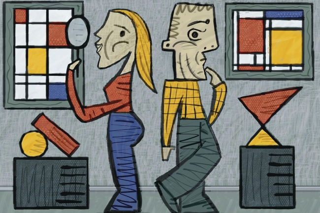

Introduction
In an article in the Chronicle of Higher Education, Alva Noë challenges the neuroscience paradigm, summarized as
The momentous proposition is this: Every thought, feeling, experience, impression, value, argument, emotion, attitude, inclination, belief, desire, and ambition is in your brain. We may not know how the brain manages this feat, but, so it is said, we are beginning to understand. And this new knowledge — of how the organization of bits of matter inside your head can be your personality, thoughts, understanding, wonderings, religious or sexual impulses — is surely among the most exciting and important in all of science, or so it is claimed.
He believes art doesn't follow this model,
But a work of art, like the meaningful world around us, is not a mere stimulus. And we work hard — we look, we ask, we think, we collaborate — to bring art and world into focus for consciousness.
He then critiques neuroscience as claiming that the picture and the object are the same,
The equivalency of a picture and what it depicts, however, is deeply implausible.[...]You may see a woman in the statuette. But you are not in the same state you would be in if you were in the presence of an actual woman.
He continues exploring aesthetics, point out
Aesthetic responses are not fixed data points but are rather like positions staked out in a conversation, continuing in our day, our lives, and in the historical time of our culture. Aesthetic responses are cultivated and nourished, and they are also challenged. Encountering a work of art is more like an evening with a friend, or an afternoon at work, than it is like the transient relishing of a flavor. Aesthetic responses are also sometimes questions that the art poses to us rather than definitive answers; they are beginnings, opportunities, not data points.
In summary,
Aesthetic responses, then, are not symptoms or reactions or stable quantities. They are actions. They are modes of participation. They are moments of conversation. There is nothing about which we can even ask: What are its neural correlates? And moreover, to look for neural correlates is already to have turned away from what deserves to be called aesthetic experience, for it is to have turned away from art and toward mere synaptic goings-on inside us.
Response
As I was reading this article, I was immediately struck by how limiting the author sees neuroscience. The "equivalency of a picture and what it depicts" is pretty silly - there is obviously a distinction both in and outside of the brain. We can tell the difference between a picture of an object and the object itself because internally there is a neural model which represents the object in all of the features we've experienced about the object. This neural model is activated when a sufficient number of its properties are activated - which may be associations from other areas. Seeing the 2D representation of a sculpture results in the neural model becoming active; seeing the 3D object as we walk around it also results in the neural model becoming active, perhaps even more strongly and with more associations.
The article also fails to include multiple modalities. It is true that you can get visual responses from art, but even going to a museum to see paintings provides a more rich neural representation including smells, alternate visual angles, connections to stories about the piece, etc... Even within the paradigm of neural models, nothing in the experience of art is inconsistent.
The idea of aesthetic responses as "actions" and "moments of conversation" is entirely consistent with the language of neural correlates. It's just an admission that most of our experience is an interplay between internal models and actions driven by the brain's representation in such a complex fashion that we can't easily summarize it. Scientifically, we can choose to isolate certain modalities - vision alone, for example - in order to understand pieces of it. The scientists aren't assuming that's all there is, but it may be all that can be described at this time - at least in quantitative detail.
It would be a very interesting research project to see how the visual system is modified by learning in other areas. Do people actually see art differently when they know the context or is the visual system doing the same thing in both cases but the increased aesthetic response comes from the interaction of multiple brain areas? Far from eliminating the language of neuroscience, we should wholeheartedly embrace it.